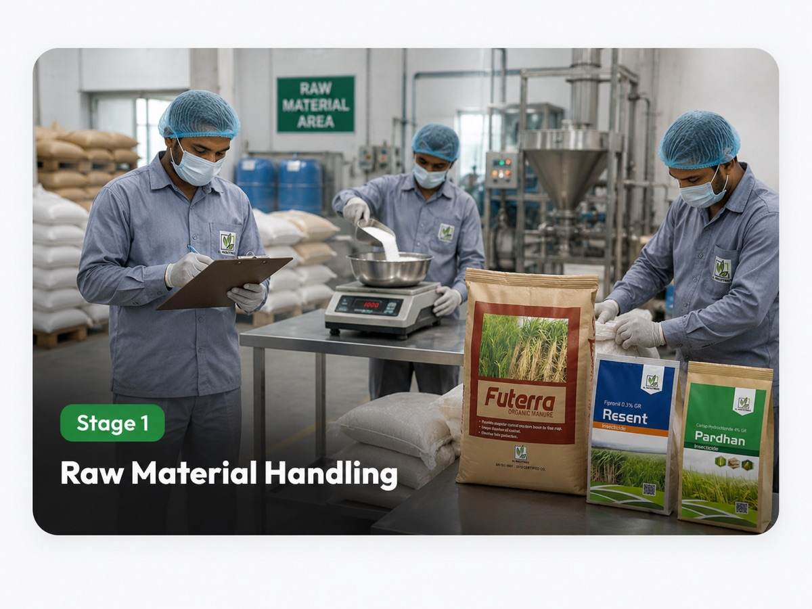
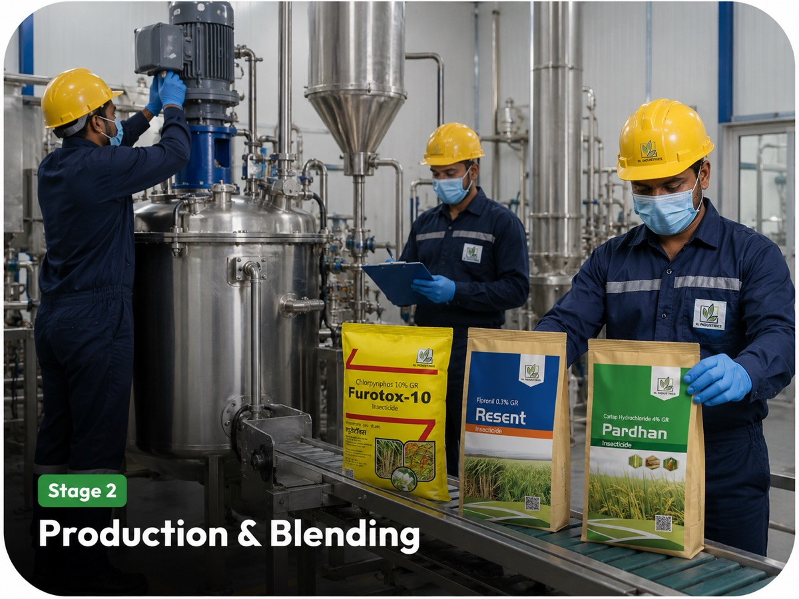
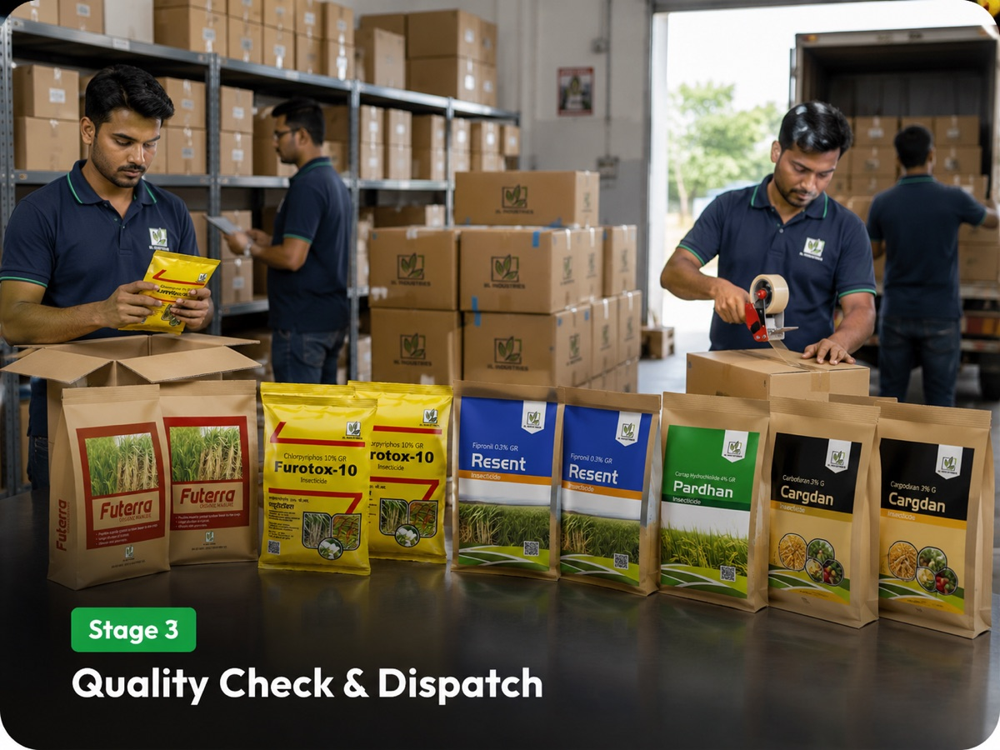

Stage 1
Raw Material / Ingredient Handling
Incoming ingredients are weighed, inspected, and handled with disciplined storage practices before they move into production.
Agro-input, fertilizer, feed and bio-solution manufacturing support from Barabanki.
Our infrastructure supports MLL Agro Industries led organic inputs, fertilizers, soil health products and the group’s feed and bio-agro categories.

Incoming ingredients are weighed, inspected, and handled with disciplined storage practices before they move into production.

Practical processing systems support controlled blending, batch consistency, and reliable output across agro-input and feed categories.

Finished packs are checked, sealed, organized, and readied for dependable dispatch to distributors, dealers, and farming markets.
A practical manufacturing flow designed for dependable quality, traceable handling, and timely delivery.